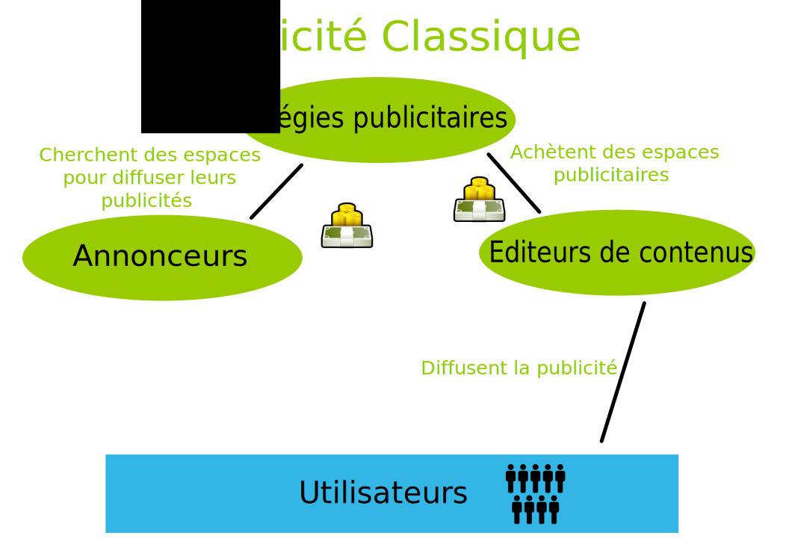
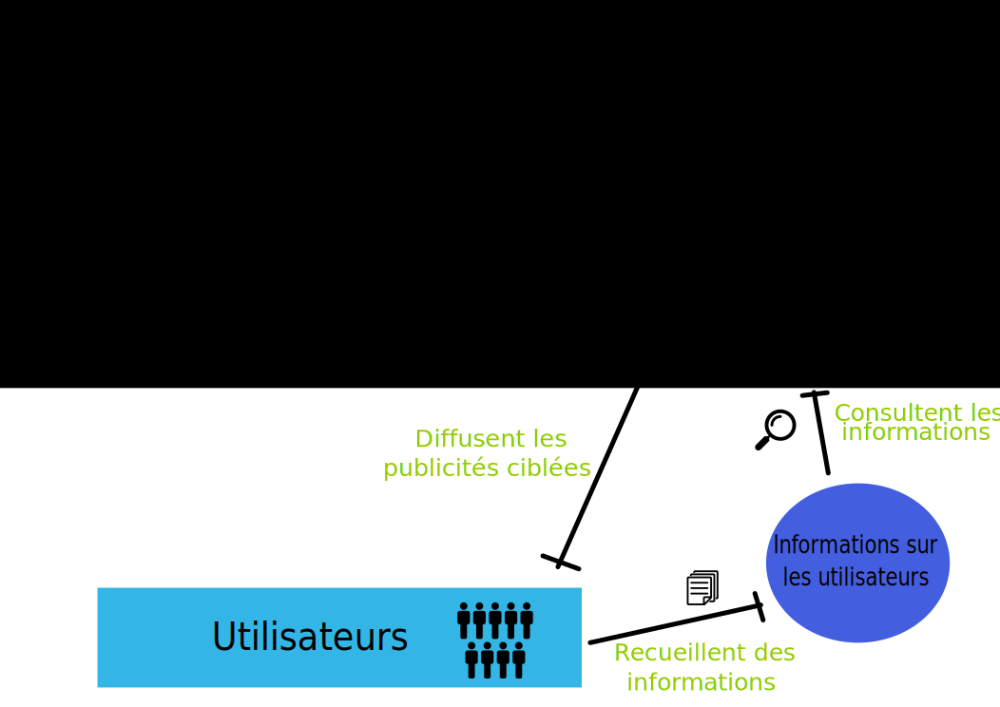
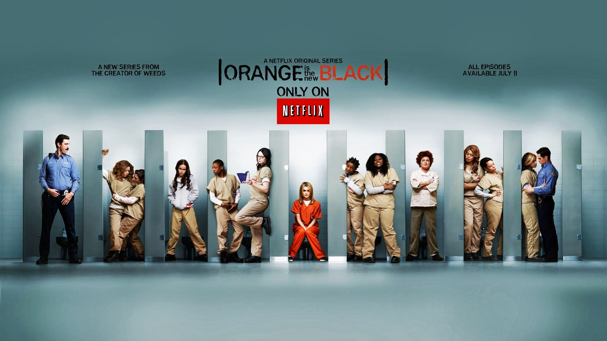
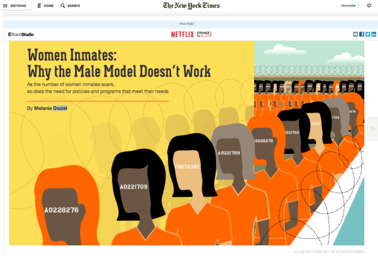

Divers moyens de financement du web existent. Nous pouvons schématiquement les distinguer selon deux classes.
D’une part, les modèles fonctionnant par la participation des internautes : la souscription (ou abonnement), la facturation à l’usage, ou encore le financement participatif. Ce dernier est décliné sous plusieurs versions et se développe actuellement, alternative possible à la publicité.
D’autre part, les différentes formes de la publicité. Il s’agit de la publicité “classique”, de l’affiliation, de la publicité ciblée et du native advertising.
Nous proposons de détailler ici ces diverses sources de financement du web, afin de comprendre les atouts et limites de chacun.
La participation des internautes
Internet est souvent perçu comme un lieu où tout doit être gratuit. Cette exigence se renforce avec l’amélioration constante des performances d’internet, et la facilité d’accès à l’information. Toutefois, les sites sont avant tout destinés aux internautes, et, à l’instar de toutes les entreprises, peuvent trouver chez consommateurs (i.e. les visiteurs des sites) une source de revenus.
Différentes manières de soutenir un site pour un internaute se sont développées :
1. La souscription, ou abonnement
La souscription correspond au paiement d'un abonnement à un site. Lorsque l'on souscrit à une offre, on peut y accéder pendant une période donnée. Certains sites de presse en ligne utilisent ce modèle, comme Mediapart qui propose un abonnement annuel à 90€ pour accéder à la totalité des informations proposées.
Toutefois, une étude menée auprès d'un millier de personnes par l’institut de sondage politique et d’études marketting OpinionWay à la demande de Mozoo (un acteur de la publicité mobile) a montré que les internautes ne sont pas prêts à payer suffisamment pour permettre aux éditeurs de sites de vivre de leur activité. Ce montant, estimé à 65 euros par an (5,4 euros par mois), en plus du coût du fournisseur d’accès à internet, est rejeté par 87% des Français.
Des systèmes d’offres payantes progressives sont assez courants et visent à remédier à ce problème. Le modèle premium en est un exemple : il propose un abonnement un peu plus onéreux pour une offre plus haut de gamme.
2. La facturation à l’usage
Le principe consiste à facturer le client en fonction du temps ou du nombre d'utilisations du service. Le site internet propose ainsi un service rémunéré à l’internaute.
C'est le système qu'a mis en place Skype avec son modèle payant, en facturant à la minute l'appel vers un mobile ou un fixe, partout dans le monde. Certains sites facturent également au document téléchargé. C'est le cas d'Oodoc qui met à disposition de ses utilisateurs des documents à télécharger à l'unité. Dans le système de facturation à l'usage, on peut également penser au site Paypal où la création d'un compte est gratuite mais où chaque réception d'un paiement est commissionnée d’environ 4%.
3. Les financements participatifs
Apparu petit à petit, le financement participatif s’impose toujours plus. Le principe est simple : les internautes soutiennent par des dons les éditeurs de contenu qu’ils apprécient.
A l’origine, le financement participatif (ou crowdfunding) avait pour vocation le financement d’un projet particulier au cours d’un laps de temps défini. Cette solution, sous sa forme initiale, peut notamment permettre à un site de démarrer, mais ne constitue pas de solution viable sur le long terme.
Depuis, le financement participatif s’est diversifié, et différents modèles sont apparus, toujours autour du même principe central. On peut penser à Kickstarter et Flattr, ou encore à Patreon et Tipeee en France. Le site est rattaché à une « communauté » au sein de laquelle les utilisateurs se voient proposer le financement régulier (mensuel, par exemple) du site internet concerné. Le montant est libre ; des avantages sont attribués par pallier.
Modèle de Patreon : Patreon est une plateforme de crowdfunding, qui permet à ses créateurs de se rémunérer en sollicitant la générosité de leur communauté de fans. Cela pourrait s’apparenter à du crowdfunding en don traditionnel. Mais ici, il n’y a pas d’objectif de montant, ni de date butoir. Un créateur lance sa campagne, et les fans choisissent de donner 1, 2, 5 € (ou plus) pour chaque nouvelle création ou chaque mois, c’est le crowdfunding en tips. Il s’agit ainsi d’une sorte de salaire que les fans versent au créateur.
En octobre 2014, Patreon a déclaré reverser un million de dollars par mois aux éditeurs de sites (8 dollars en moyenne). Cette nouvelle solution est source d’espoir pour plusieurs éditeurs de sites web.
Dans ce contexte, Google entre actuellement en jeu en s’inspirant de ce qui existe. L’entreprise propose un nouveau service, Contributor, qui offre la possibilité aux utilisateurs de payer une somme libre (de 1 à 3 dollars) chaque mois pour éviter les publicités utilisant Google’s advertising. L’argent ainsi récolté par Google est alors redistribué aux éditeurs. Pour l’instant il s’agit d’un projet en cours d’expérimentation sur un ensemble limité de sites.
La publicité
De même que pour le financement participatif, les formes de la publicité sur internet se sont largement diversifiées depuis leur apparition. Aujourd’hui, on distingue cinq principaux types de revenus par la publicité.
La publicité « classique »
La publicité dite classique est simple et bien connue, inspirée des médias traditionnels : il s’agit des banderoles ou pop-up s’affichant en général en bordure d’écran lorsque l’utilisateur ouvre un nouvel onglet. Il s’agit de la première forme de publicité en ligne à être apparue (en 1995). Internet est vu comme un vaste espace publicitaire susceptible d’être utilisé par des régies pour atteindre les consommateurs.

L’affiliation
L'affiliation sur Internet est une technique marketing permettant à un annonceur de diffuser ses produits sur des sites Internet affiliés. Elle s’apparente à un système de courtage : une entreprise verse une commission à un site partenaire, revendeur du produit. Ce système permet d'améliorer sa visibilité sur le web car les produits sont disponibles par un plus grand nombre d'internautes.
L'affiliation se distingue de la publicité classique sur le Web. Un contrat d'affiliation passé avec des affiliés n'a pas grand-chose à voir avec un contrat passé avec une régie publicitaire. Dans le premier cas, c'est un partenariat sur une durée indéterminée et résiliable à tout moment par les deux parties ; alors que dans le second cas, c'est une prestation sur une période définie et non résiliable. De plus, les affiliés ne sont pas obligés de relayer les messages de l'annonceur, contrairement à la régie qui, elle, s'engage à diffuser la publicité. Cela pourrait donc être une solution au problème de l’intrusion intempestive de le publicité sur nos pages web.
L’affiliation est parfois présentée comme une solution miracle pour générer du gain pour un site web. La rémunération peut se faire sous plusieurs modalités : affichage, clic, ventre, formulaire… Pour mettre en relation l’affilieur et l’affilié, des plateformes existent et facilitent cette opération. Ce système est très utilisé par les sites de formation en ligne, qui vendent par exemple des ebooks ou des formations vidéo. Ils proposent alors aux internautes de mettre des liens de vente sur leurs propres sites et ainsi toucher, en cas de vente, des commissions pouvant aller jusqu'à 50%. Ce système peut augmenter de façon significative la vente de ces produits. Seulement, ce système est surtout adapté à la vente de produits virtuels où les marges sont élevées et permettent de verser des commissions importantes aux revendeurs.
Oodoc utilise par exemple le système d'affiliation (en plus de la facturation à l’usage) : le site n'est pas l'auteur des documents mais se positionne comme une plateforme de vente. Les revenus engendrés par les ventes de documents sont alors partagés entre le site et l'auteur.
La publicité ciblée
Le principe de la publicité ciblée est le suivant : les données des utilisateurs sont conservées et analysées afin de leur afficher des publicités correspondant à leurs habitudes de consommation ou leurs goûts. Cette pratique suppose l’utilisation de cookies et l’IP tracking ; elle est très controversée, et s’apparente d’après certains utilisateurs à de l’espionnage. D’autres mettent en avant les vertus informatives d’un tel type de publicité.
Quoi qu’il en soit, la publicité ciblée est beaucoup plus efficace que les publicités habituelles aléatoires et rapporte beaucoup plus d’argent aux éditeurs de sites.

Le native advertising
En plus de la publicité ciblée, on remarque que depuis quelques années, un nouveau type d’annonces se développe fortement sur Internet, le Native Advertising (ou publicité indigène). Le Native Advertising se présente sous la forme d’un article rédigé avec une mise en forme des plus officielles et comportant en en-tête une mention « sponsorisé par ». Ces articles ont tout de l’allure d’un texte rédactionnel classique. Néanmoins, ils ont été commandés par les publicitaires dans l’unique but de communiquer sur leurs produits.

Publicité classique de Netflix

Native Advertising de Netflix
Nous pouvons voir ici deux publicités pour une série diffusée sur Netflix. Si dans la première (l’affiche de la publicité normale), le sujet de la publicité et le diffuseur sont clairement identifiés, on remarque que ces éléments sont plus discrets dans la seconde. En utilisant l’image sérieuse du New York Time, Netflix parle de sa série de manière indirecte et touche un public peu préparé à concevoir cet article comme une publicité. L’article est tout ce qu’il y a de plus officiel et joue inconsciemment sur l’esprit du consommateur.